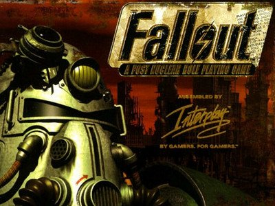

Fallout |
|
|---|---|
 Fallout es un videojuego de rol desarrollado por Interplay y su división Black Isle Studios. Este fue autopublicado por la empresa el 30 de septiembre de 1997 y es el primero de la saga Fallout. El juego es considerado como un "sucesor espiritual" de Wasteland (1988), aunque no lleva ese nombre porque Electronic Arts poseía los derechos sobre el mismo, y aunque con algunas referencias comunes, ambos juegos se desarrollan en universos diferentes. Los diseñadores propusieron distintos títulos y en un principio acordaron en llamarlo Armageddon, pero otro proyecto de Interplay ya lo había tomado, por lo que se vieron obligados a cambiarlo y Fallout fue el favorito de los restantes. En un principio el juego iba a usar el sistema GURPS (sistema de rol universal y genérico) diseñado por Steve Jackson, pero el estudio canceló su uso y creó el sistema SPECIAL.
|
|
HistoriaFallout tiene lugar en un escenario en el que los Estados Unidos se han visto envueltos en una guerra nuclear mundial, lo que ha degenerado en un mundo post-apocalíptico al estilo de Mad Max. El protagonista de Fallout es un habitante de uno de los búnkeres antinucleares (conocidos como Vaults) construidos con la idea de preservar la vida humana hasta que el invierno nuclear haya pasado. El juego se desarrolla en el año 2161 en el sur de California. El Chip de Agua del búnker, que controla el bombeo y reciclado de agua, se ha estropeado, y se encomienda al protagonista la misión de buscar uno nuevo. Si el jugador consigue el nuevo chip antes de cumplirse 150 días de misión descubrirá que existe una nueva amenaza, y será enviado a dos nuevas misiones. Un mutante conocido como El Maestro (anteriormente conocido como Richard Grey) ha comenzado a usar un virus genéticamente modificado para crear una raza de Súper-Mutantes. El jugador debe vencer al Maestro y destruir la base de los Super-Mutantes. Una vez superada esta prueba,el jugador regresa automáticamente al búnker 13, pero allí se le dice que ha cambiado demasiado y que su presencia puede influir negativamente en los habitantes del búnker, y como única recompensa obtiene el exilio. Es importante aclarar que después de 500 días de juego, los mutantes encontrarán y arrasarán el búnker 13, provocando el final del juego. El límite se reduce a 400 días si la Caravana del Agua es enviada al búnker (aunque este gesto aumenta a 230 días el límite para encontrar el Chip de Agua). El parche v1.1 eliminó este límite, aunque mantiene la opción de mandar la caravana. El vídeo que se muestra cuando los mutantes arrasan el búnker 13 también se puede observar si se acepta ser convertido en mutante en la base militar (por supuesto, esta elección también provoca el final del juego). Posiblemente, la imagen más memorable del juego es el final "bueno" (Destruyendo al Maestro y a su ejército de Super Mutantes), con el jugador caminando hacia el desierto mientras suena "Maybe". |
|
DesarrolloA principios de 1994 Interplay anunció que había adquirido la licencia para realizar juegos con el sistema GURPS (sistema de rol genérico y universal). Interplay creó Fallout como sucesor espiritual del juego postapocalitpico de 1988, Wasteland. Aunque en un principio se ideo como una secuela oficial, la empresa no tenía los derechos de la IP (propiedad intelectual) en ese momento. El presupuesto para el proyecto fue de 3 millones de dólares. En las etapas tempranas de planeamiento, consideraron otros escenarios basados en libros de GURPS, incluyendo una temática de viaje en el tiempo con aliens y dinosaurios. Los nombres del juego en desarrollo fueron GURPS: Wasteland y Vault 13: A GURPS Post-Nuclear Adventure; en un principio plantearon llamarlo Armageddon pero otro proyecto ya lo había tomado, finalmente Brian Fargo (jefe de Interplay) propuso Fallout. Tim Cain creó el motor del videojuego y la mayor parte del diseño. También trabajó por su cuenta desarrollando mecánicas e incorporando el sistema GRUPS, pero en un momentp el trato se desmoronó. Esto fue debido a que quien cedía la licencia de GRUPS, Steve Jackson Games, se opuso a la excesiva violencia y gore presente en el videojuego, lo que forzó a Interplay a cambiarlo por el sistema SPECIAL. De acuerdo a Steve Jackson Games, la decisión fue tomada por Interplay sin explicación alguna. |
|
InfluenciasExisten en el juego muchas referencias a clásicos de la ciencia ficción post-apocalíptica. Una de las primeras armaduras que aparecen es igual a la que luce Mel Gibson en la saga de Mad Max. Un jugador que lleve esta armadura puede encontrar en Junktown a un perro llamado Dogmeat (y éste es el nombre del perro de Mad Max en la película). En Fallout 2, si el jugador golpea al perro, un personaje no jugador con el sospechoso nombre de Mel aparecerá para defender al perro. Muchas de las referencias aparecen en encuentros aleatorios, como una huella de Godzilla. Otras son simples citas, como un loco en The Hub que anda en círculos murmurando frases, una de las cuales es: Juguemos Guerra Termo-Nuclear Global, en clara referencia a la película de 1983 Juegos de Guerra. También hay referencias a otras películas como Robin Hood. Fallout toma como fuentes los magazines y los cómics de ciencia ficción y superhéroes de los años 1950. Por ejemplo, las computadoras usan tubos de vacío en vez de transistores, y existen armas de energía que recuerdan a las usadas por Flash Gordon. Los habitantes de los búnkeres visten un ajustado traje azul con una línea horizontal amarilla en el pecho, muy al estilo de lo que en la época se consideraba una vestimenta futurista. El interfaz está diseñado para hacer recordar a los anuncios y juegos de la época. Por ejemplo, los dibujos que acompañan a la hoja de caracteres son similares al de la caja del Monopoly. La ausencia de este estilo retro-futurista fue una de las causas por las que los spin-offs del juego fueron criticados. |